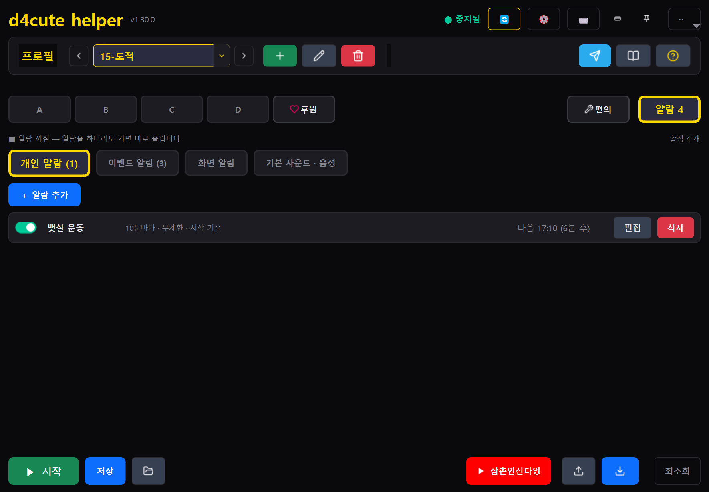
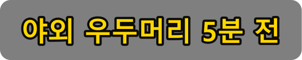
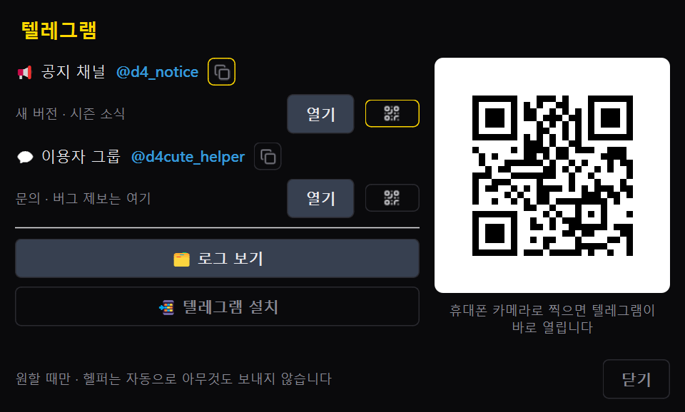
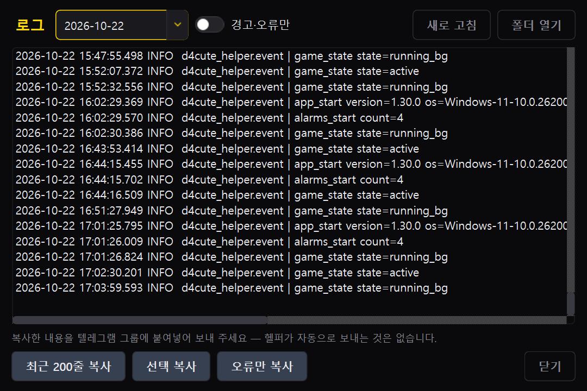

1 처음 5분 — 설치부터 첫 매크로 가동까지
d4cute helper는 디아블로4 플레이 시 반복 스킬 시전, 버프 유지, 복잡한 인벤토리 호라드림의 함 선변성 작업을 쾌적하고 안전하게 보조하는 고성능 도우미입니다.
- 최신 설치본 다운로드 — 설치본(
d4cute_helper_setup.exe)을 받아 설치하거나, 무설치 실행 파일(d4cute_helper.exe)을 바로 실행합니다. Windows가 "알 수 없는 게시자" 경고를 띄울 경우 추가 정보 → 실행을 누릅니다. - 헬퍼를 켜면 창 크기가 자동으로 가장 작은 기본 크기로 시작되어 게임 화면을 가리지 않습니다.
- 프로필 줄에서 내 직업에 맞는 프로필을 선택하거나 ＋ 버튼으로 새로 생성합니다.
- 슬롯 A를 누르고 매크로 설정에서 파란색 발동키 버튼을 누른 뒤, 사용할 마우스 또는 키보드 키를 지정합니다.
- 시퀀스 탭에서 시전할 스킬 키와 딜레이를 추가하거나, 녹화 버튼을 눌러 실제 게임 플레이 키 입력을 그대로 기록합니다.
- 하단의 ▶ 시작 버튼을 누르고 게임으로 돌아가 발동키를 누르면 매크로가 안전하게 동작합니다.
2 최신 화면 구성 (v1.30)
1.30 판에서는 상단 바와 슬롯 탭 바가 한층 더 직관적이고 미려하게 업그레이드되었습니다.
 🔍 클릭하여 확대
🔍 클릭하여 확대
1) 상단 바 & 프로필 컨트롤
- 실행 상태 표시기 — 대기 / 실행 중 / 일시정지 상태를 실시간 색상으로 표시합니다.
- 상단 기능 버튼 — 업데이트(새 패치 감지 시 점멸), 설정(⚙), 테스트(입력 전송 검증), 미니창 전환, 항상 위(핀).
- 프로필 줄 (Profile Bar) — ‹ › 버튼으로 빠르게 프로필을 전환할 수 있으며, 콤보박스를 더블클릭하면 즉시 이름을 변경할 수 있습니다. ＋(새 프로필), 🗑(삭제), ✎(이름 변경), 텔레그램(종이비행기), 문서(시즌 문서), ?(도움말) 버튼이 제공됩니다. 창은 켤 때마다 가장 작은 기본 크기로 뜨고(하한 900×700, 글꼴 배율에 따라 커짐), 전체창(최대화)은 없습니다.
2) 슬롯 줄 (Slot Navigation)
- A B C D — 4개의 독립 매크로 슬롯. 켜진 슬롯은 초록 테두리, 발동 중이면 붉은 바탕에 흰 글씨로 점등됩니다. 매크로 이름은 버튼이 아니라 마우스를 올리면 뜨는 툴팁 맨 위에 크게 보입니다(버튼 폭 유지).
- ♡ 후원 — "헬퍼는 무료입니다" 고지와 파트너 추천 링크(스타링크 등)·클랜장님 채널 소개가 배너 캐러셀로 나옵니다. 헬퍼가 자동으로 보내는 것은 없습니다.
- 🔧 편의기능 — 호라드림의 함 인벤 선변성 자동화 전용 한 페이지 UI.
- 🔔 알람 — 군단, 세계 보스, 지옥물결 및 개인 타이머 알람 설정.
- 슬롯 우측 요약 칩 — 현재 선택된 슬롯의 실행 방식(순차/독립), 발동 방식(홀드/토글/1회), 발동키가 늘 실시간으로 요약 표시됩니다.

3 매크로 설정 — 실행 방식 · 발동 방식 · 발동키
1) 실행 방식 및 발동 방식
| 구분 | 모드명 | 설명 및 추천 사용처 |
|---|---|---|
| 실행 방식 | 순차 | 스텝 1부터 마지막 스텝까지 순서대로 시전한 뒤 다시 처음부터 반복합니다. 정해진 스킬 콤보 및 딜 사이클 로테이션에 적합합니다. |
| 독립 | 스텝마다 각자 설정된 쿨다운(대기 시간)에 맞춰 독자적으로 반복 실행합니다. 쿨다운이 제각각인 보호막/버프 스킬 유지에 최적화되어 있습니다. | |
| 발동 방식 | 홀드 | 발동키를 누르고 있는 동안만 매크로가 돌아가며, 키를 떼면 즉시 멈춥니다. 주력 딜링 스킬에 권장됩니다. |
| 토글 | 발동키를 한 번 누르면 켜지고, 다시 누르면 꺼집니다. 장시간 파밍이나 던전 순회 시 손가락 피로도를 덜어줍니다. | |
| 한 번 | 발동키를 누르면 시퀀스를 1회 처음부터 끝까지 수행하고 스스로 종료합니다. 물약 연속 제작, 장비 구매 등에 적합합니다. |
2) 발동키 선택 및 정밀 튜닝
- 유연한 발동키: 키보드 모든 키, 마우스 좌/우 클릭, 휠 위/아래, 사이드 버튼, Ctrl · Shift · Alt 조합 키를 모두 지원합니다. 여러 슬롯에 동일한 발동키를 지정하여 동시 연계 발동도 가능합니다. 단, 편의기능(선변성) 시작 단축키와는 겹칠 수 없습니다 — 겹치면 고를 때 거부됩니다.
- 누름 인식 지연 (Press Delay): 짧게 툭 친 클릭은 무시하고, 지정한 시간(예: 250~300ms) 이상 꾹 눌렀을 때만 매크로가 켜집니다. 우클릭을 발동키로 쓸 때 인벤토리나 창고 창이 닫히는 현상을 방지하는 필수 설정입니다.
- 떼고 유지 (Release Buffer): 발동키를 손에서 뗀 후에도 지정한 시간 동안 매크로 동작을 연장 유지합니다. 사냥 직후 주변 바닥 아이템을 루팅하는 동안 공격이 끊기지 않도록 여유를 줍니다.
- 동반 키 (Companion Keys): 매크로가 가동되는 동안 지속적으로 함께 눌러두는 키(예: 제자리 강제 정지 공격 Shift, 강제 이동 키 등)를 지정할 수 있습니다.

4 시퀀스 빌더 · 딜레이 일괄변경 · 마우스 녹화
1) 스텝 카드 및 일괄 조작
- 스텝 카드를 클릭하면 키, 동작 모드, 딜레이(대기 시간, ms)를 개별 변경할 수 있습니다.
- 모드 옵션:
- Single: 키를 1회 단발 입력
- Burst: 지정된 간격으로 고속 연타
- Hold: 지정 시간 동안 키를 꾹 누르고 유지
- 딜레이 일괄변경: 모든 스텝의 대기 시간을 원하는 수치(ms)나 비율(%)로 한 번에 변경합니다.
- 전체 → Burst/Single: 모든 등록 스텝의 동작 모드를 원클릭으로 일괄 전환합니다.


2) 실시간 마우스 좌표 녹화 및 인간화 랜덤 오차
- 녹화 버튼을 누르고 게임 화면에서 키와 마우스를 입력하면 순서와 시간 간격이 그대로 기록됩니다.
- 화면 좌표 기록: 마우스 클릭 시 당시 클릭한 화면의 절대 좌표(X, Y)가 기록되어 매크로 재생 시 해당 위치를 자동으로 클릭합니다.
- 인간화 랜덤 오차:
- 클릭 위치 ± px: 매 클릭마다 지정된 픽셀 반경 내에서 불규칙하게 오차를 주어 기계적 감지를 방지합니다.
- 랜덤 변동 %: 스텝 간격마다 일정 비율의 무작위 지연을 섞어 자연스러운 손동작을 모방합니다.
5 편의기능 — 인벤 선변성 (한 페이지 UI)
1.30 버전에서 새롭게 개편된 인벤 선변성 도구는 호라드림의 함을 이용한 전설·고유 장비 선변성 작업을 단 몇 번의 조작으로 자동화합니다.
 🔍 클릭하여 확대
🔍 클릭하여 확대
1) 33칸 자동 그리드 계산 및 시작
- 게임에서 인벤토리와 호라드림의 함 창을 열어 둡니다.
- 첫 칸 찍기를 누른 뒤 게임 인벤토리의 맨 첫 번째 칸(좌상단)에 마우스를 올리고 Enter를 누릅니다.
- 끝 칸 찍기를 누르고 인벤토리 맨 마지막 칸(우하단)에 마우스를 올린 뒤 Enter를 누릅니다. (취소는 언제든 Esc)
- 두 점의 위치만 지정하면 33개 인벤토리 칸의 중심 좌표가 자동으로 정확히 계산됩니다.
- 게임 화면에서 시작 단축키(기본 F10, 파란 키 버튼을 눌러 바꿀 수 있음)를 누르면 선변성이 전자동으로 시작됩니다. 편의기능 탭을 굳이 열어두지 않아도 단축키는 상시 작동합니다.
2) 동작 메커니즘 및 지능형 안전장치
- 지능형 반복 루프: 인벤토리 각 칸을 순회하며 우클릭 → 호라드림 함에 올리기 → 아이템 변성 버튼 클릭 → 변환 → 수락(Enter) → 초기화를 자동으로 진행합니다.
- 계정 귀속 아이템 건너뛰기 스위치: 스위치를 켜면 귀속 아이템은 건너뛰고 비귀속 장비만 골라 변성합니다. 스위치를 끄면 귀속 장비도 변성하며 수락 팝업 창이 뜰 때만 안전하게 Enter를 전송합니다.
- 큐브 비움 검증 (Cube Empty Check): 초기화 뒤 큐브 첫 칸의 그림(첫 아이템을 올릴 때 빈 모습·찬 모습을 기억해 둠)으로 비었는지 보고, 그림을 못 잡은 환경에선 큐브 머리글 글자로 보조 판정합니다. 비지 않았으면 초기화를 다시 누르고, 끝내 안 비면 멈춥니다 — 아이템 두 개가 겹쳐 올라가는 일을 막기 위한 장치입니다.
- 비상 정지: 작업 도중 키보드의 Esc 키를 누르면 어디서든 즉시 선변성이 멈춥니다.
- 느린 PC 조절값: 시작 전 ms(시작 버튼 뒤 게임 창으로 갈 여유), 결과 대기 ms(기본 3000 — 변환·수락 뒤 변성이 끝나 변환 버튼이 꺼질 때까지 기다리는 상한, 신호가 오면 바로 넘어감), 초기화 뒤 ms(기본 0 — 초기화 뒤 추가 대기). 연출이 느린 PC 에서 아이템이 겹치거나 변성 없이 넘어가면 결과 대기를 올리세요.
- 실행 기록: 한 바퀴 돌 때마다
%APPDATA%\d4cute_helper\debug\alter_slots.txt에 칸별 판정이 남습니다. 문제가 나면 이 파일을 텔레그램 그룹에 올려 주세요.
6 스마트 알람 시스템 — 이벤트 · 음성(TTS) · 배너
디아블로4의 주요 시간제 컨텐츠(군단 침공, 세계 보스, 지옥물결 등)를 놓치지 않도록 알려주는 지능형 알람 엔진입니다.

🔍 클릭하여 확대1) 백그라운드 상시 감시 및 우선순위
- 상시 가동: 매크로 시작 버튼을 누르지 않아도, 헬퍼 프로그램이 켜져 있는 동안 알람이 켜져 있다면 백그라운드에서 실시간으로 시간을 체크하여 알림을 보냅니다.
- 이벤트 알람: 세계 보스·군단·지옥물결 시작 전 사전 알림 — 5·3·1분 전과 시작 시각 중에서 고릅니다(기본: 세계 보스 5·3분 전 켜짐, 지옥물결·군단은 꺼짐).
- 개인 알람: 지정 시각·간격·타이머 세 종류(예: 비약 30분 만료 타이머). 알람마다 음성·소리·배너를 따로 둘 수 있고, 겹치면 우선순위가 높은 것이 먼저 울립니다.
2) 인게임 화면 배너 & 한국어 TTS 음성
- 인게임 화면 배너: 게임 화면 상단이나 모서리에 고급스러운 반투명 알림 배너를 띄웁니다. 배너의 폰트 크기, 위치, 노출 지속 시간을 자유롭게 조절할 수 있습니다.
- 한국어 TTS 음성: "5분 후 세계 보스가 출현합니다"와 같이 자연스러운 한국어 음성으로 직접 읽어줍니다. 볼륨(기본 80)과 말 속도를 조절할 수 있습니다.

7 창 모드 · 항상 위(핀) · 인게임 오버레이
1) 미니창 모드 (Mini Bar)
게임 화면 모니터 한구석에 작게 띄워두고 쓸 수 있는 초소형 한 줄 바 형태의 모드입니다.

- 슬롯 A, B, C, D의 현재 작동 상태가 점등되어 실시간 확인 가능.
- 시작 / 중지 버튼, 편의기능(렌치) 버튼 — 누르면 기본창으로 돌아와 편의기능 탭을 엽니다(선변성 시작은 단축키나 그 탭의 시작 버튼으로), 항상 위(핀) 버튼 내장.
- 복귀(네모) 버튼을 누르면 즉시 원래 크기의 기본 창으로 되돌아옵니다.
2) 인게임 HUD 오버레이
- 게임 화면 위에 반투명으로 띄워 매크로 동작 상황을 보여주는 오버레이입니다.
- 어떤 슬롯이 돌고 있는지, 대기 키로 인해 일시정지 상태인지, 선변성 진행률이 몇 %인지 실시간 HUD로 보여줍니다.
- 설정(⚙)에서 오버레이의 화면 위치(좌상단/우상단 등), 크기, 불투명도(알파값)를 슬라이더로 조절할 수 있습니다.
8 안전 장치 — 대기 키(Stop Keys) · 게임 창 감지
- 대기 키 (Stop Keys, 기본값: Enter Tab T I): 채팅 창 열기(Enter), 지도 열기(Tab), 차원문(T), 인벤토리 열기(I) 등 게임 인터페이스를 열었을 때 매크로가 엉뚱하게 스킬을 난사하지 않도록 즉시 입력을 일시정지합니다. 대화를 마치고 다시 발동키를 누르면 매크로가 재개됩니다.
- 게임 창 감지: 디아블로4 프로세스가 활성 윈도우 창일 때만 작동합니다. 설정에서 특정 창 제목이나 프로세스명을 사용자가 직접 커스텀 매칭할 수도 있습니다.
- 입력 전송 검증 도구: 상단 바의 테스트 버튼을 누르면 게임 밖에서도 가상 키 입력이 정상적으로 시스템에 주입되는지 사전에 점검할 수 있습니다.
3) 입력 테스트 창
상단 바의 테스트 버튼을 누르면 작은 창이 뜨고, 매크로가 보내는 키·마우스 입력이 그대로 들어오는지 눈으로 확인할 수 있습니다. 발동키를 눌러도 아무 일이 없을 때 "헬퍼가 입력을 못 보내는지, 게임이 안 받는지" 를 가르는 첫 점검 도구입니다.

 🔍 클릭하여 확대
🔍 클릭하여 확대
9 프로필 관리 · 백업 · 클랜원 공유
- 프로필 하나에는 슬롯 A~D의 모든 시퀀스와 딜레이, 발동키 설정이 통째로 묶여 저장됩니다.
- 원소술사, 야만용사, 드루이드, 강령술사, 도적, 혼령사 등 직업별 및 빌드별로 프로필을 분리해두면 클릭 한 번으로 모든 세팅이 교체됩니다.
- 내보내기: 현재 세팅을
.d4cute파일로 내보내어 안전하게 백업하거나 클랜원에게 공유할 수 있습니다. - 가져오기: 다른 사용자가 공유한
.d4cute프로필 파일을 불러와 내 헬퍼에 즉시 적용합니다. - 저장 버튼을 눌러야 디스크에 안전하게 반영되며, 잘못 건드렸을 때는 불러오기를 눌러 마지막 저장 시점으로 되돌릴 수 있습니다.
10 텔레그램 & 로그 뷰어
프로필 줄의 파란색 종이비행기 아이콘을 클릭하면 텔레그램 지원 다이얼로그가 열립니다.


- 공지 채널:
@d4_notice— 새 버전 소식과 안내. - 이용자 그룹:
@d4cute_helper— 헬퍼 설정 팁·문의·버그 제보는 여기서만 받습니다. 스마트폰으로 화면의 QR 코드를 찍으면 바로 들어갑니다. - 텔레그램 설치: 아직 없으면 창의 설치 버튼이 공식 앱 안내 페이지를 엽니다. 헬퍼가 설치 파일을 받거나 실행하지는 않습니다.
- 로그 보기 (Log Viewer): 오류나 이상 현상이 발생했을 때 날짜별 로그 파일(7일 보관, 경로의 사용자명은 가림)을 보고 최근 200줄 복사·오류만 복사로 클립보드에 담아 그룹 방에 붙여 넣습니다. 복사본 첫 줄에 버전·OS·배율·날짜가 붙어 바로 분석할 수 있습니다. 헬퍼는 외부로 아무것도 자동 전송하지 않습니다.
11 앙증맞은 클랜 & 삼촌안잔다잉 채널
제작자가 활동하는 클랜과, 그 클랜장님의 게임 방송 채널입니다. 둘 다 헬퍼와는 별개의 곳입니다.
<앙증맞은> 무지개날개
디아블로4 인게임 클랜 · 클랜장 대한민국(삼촌안잔다잉)
제작자가 함께 활동하는 클랜입니다. 모토는 "도움은 품앗이" — 일방적인 버스보다 서로 챙기는 기브 앤 테이크, 검색 생활화. 시즌마다 나락 고단·횃불 무한런·보스 파티·신화 고유 파밍을 함께합니다. 시즌오프 뒤 10일 이상 미접속이면 정리되지만, 새 시즌에 라이브 방송에서 다시 가입할 수 있습니다.
삼촌안잔다잉
🌙 다들 잘 때, 삼촌은 게임 중! · 유튜브·치지직 동시 방송
클랜장님이 운영하는 게임 방송 채널입니다(제작자 채널이 아닙니다). 디아블로4를 중심으로 직접 플레이한 경험과 정보를 나눕니다 — 처음 시작하는 분도, 오랜만에 돌아온 분도 편하게.
- 시즌별 캐릭터 육성·빌드·스킬·정복자 가이드
- 장비 세팅과 아이템·재료 파밍 팁
- 공개 테스트 서버(PTR) 체험과 패치 변경점
- 필요할 때 멈춰 보는 쇼츠 '손안의 공략집'
- 시행착오도 웃으며 나누는 게임·소통 방송
@d4cute_helper 에서 받습니다.12 자주 묻는 질문 (FAQ) & 문제 해결
Q. 발동키를 눌러도 스킬이 나가지 않아요.
- 상단 바의 상태가 실행 중인지 확인하세요 (▶ 시작 버튼 클릭 여부).
- 선택한 슬롯의 매크로 활성 스위치가 켜져 있는지, 시퀀스 탭에 스텝이 1개 이상 들어있는지 확인하세요.
- 디아블로4 게임 창이 화면 맨 앞에 포커스되어 있어야 합니다.
- 채팅이나 인벤토리를 열어 대기 키로 인해 일시정지된 상태라면, 발동키를 한 번 더 누르면 풀립니다.
Q. 오른쪽 마우스를 발동키로 쓰는데 인벤토리나 창고에서 자꾸 창이 닫혀요.
매크로 설정의 누름 인식 지연(Press Delay)을 250ms ~ 300ms로 설정하세요. 이렇게 하면 아이템을 우클릭해서 옮길 때의 '짧은 클릭'은 게임에 그대로 전달되고, 꾹 누를 때만 매크로가 켜져 창 닫힘 오동작이 완전히 사라집니다.
Q. 호라드림의 함 선변성이 버튼을 못 찾거나 멈춰요.
1.30 버전에서 OCR 글자 인식 로직과 큐브 비움 검증이 대폭 강화되었습니다. 게임 내 그래픽 설정에서 글자가 너무 흐리거나 UI 배율이 극단적인 경우 인식이 어려울 수 있으니, 문제가 지속되면 %APPDATA%\d4cute_helper\debug\ 폴더의 alter_slots.txt 파일을 복사하여 텔레그램 그룹에 문의해 주세요.
Q. 선변성에서 아이템 두 개가 겹치거나, 변성 없이 다음 칸으로 넘어가요.
변성 연출이 느린 PC 에서 생기는 증상입니다. 편의기능 탭의 결과 대기 ms를 올리고(예: 3000 → 5000), 그래도 반복되면 debug\alter_slots.txt 를 그룹에 올려 주세요. 1.30.1 부터는 큐브 첫 칸 그림으로 비었는지 확인하고 수락창이 늦게 떠도 Enter 를 칩니다.
Q. 헬퍼·매크로 질문은 어디서 하나요?
텔레그램 이용자 그룹 @d4cute_helper 에서만 받습니다. 삼촌안잔다잉 유튜브 채널은 게임을 즐기는 방송이라 헬퍼·매크로 문의를 받지 않습니다.
Q. 창이 하얗게 뜨거나 깜빡여요 (백화 현상).
1.30 에서 내장 브라우저의 렌더러를 바꿔 백화를 고쳤습니다. 그래도 다시 보이면 로그 뷰어의 오류만 복사 결과와 화면 캡처를 텔레그램 그룹에 올려 주세요.